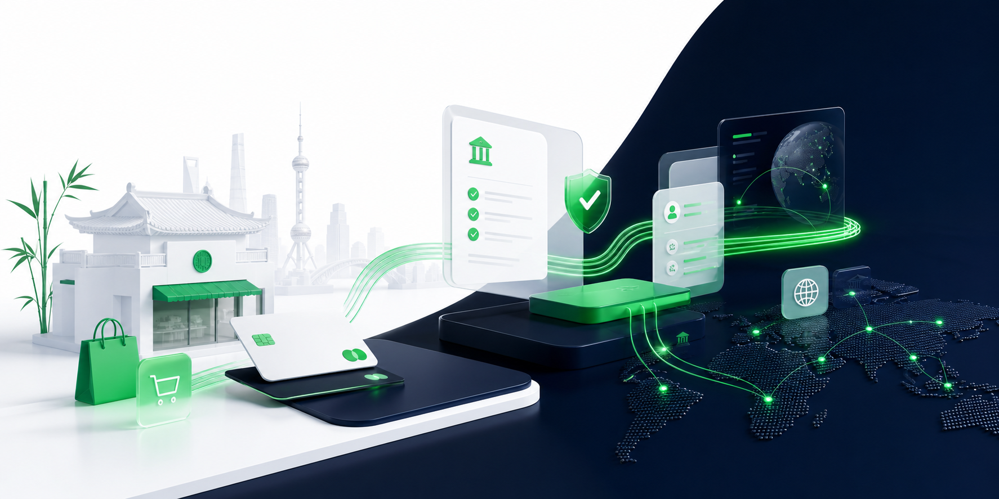

WELCOME TO ADYEN
欢迎开启 ADYEN 之旅
一页完成商户上线准备：测试环境、KYC 材料、协议电子签、SAQ A、生产环境账号和后台操作路径。
Launch sequence
完成前四步后，即可获取生产环境账号
建议商户按顺序推进。每一步都包含负责人、材料、检查点和后台路径，适合 Sales、财务、技术、客服一起使用。
Visual reference
视觉图作为总览收尾，帮助商户理解上线节奏
这张图保留品牌感和完整性，但不再抢占商户最需要先看到的操作路径。

Step 01
获取测试环境账号
测试环境登录网址：CA-TEST.ADYEN.COM。请使用 Google Authenticator 或 Microsoft Authenticator 进行多重验证登录。
Step 02
提交 KYC 材料
选择实体注册地后，页面会显示该国家/地区特有注册文件，以及所有国家共用的股东、签字人、联系人和业务链接材料。
上传前复查
Step 03
完成合作框架协议电子签
协议版本、Merchant Agreement、Pricing Agreement 和正式报价条款，请联系 Sales 获取正式文件。
Step 04
完成 SAQ A 电子签
SAQ A 是 PCI DSS 的一种自评问卷路径，通常用于商户页面不直接接触完整银行卡数据、由合规支付服务商托管敏感支付页面或字段的场景。
Step 05
获取生产环境账号
生产环境登录网址：CA-LIVE.ADYEN.COM。前四步完成后，即可进入生产环境账号开通流程。
生产环境开通后检查
References
参考的 Adyen 官方文档
页面内容根据公开文档整理成中文说明。具体政策、权限和协议仍以官方文档及 Sales/Legal 提供文件为准。